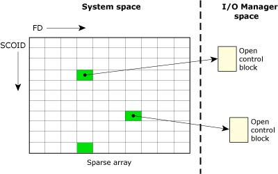

9.2. Пространство файловых дескрипторов |
9.2. Пространство файловых дескрипторов |
Файловый дескриптор (fd) -- целое число 0, 1, 2, ..., которое возвращается функцией open() и используется в последующих запросах ввода-вывода.
Комбинация fd и sсoid (идентификатор соединения с сервером) указывает на блок управления файлом -- open control block (OCB).

OCB содержит активную информацию об открытом файле (в частности, текущую позицию для чтения/записи).